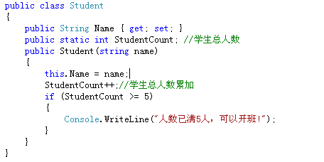

静态字段的2个常用方法
（1）记录已实例化的对象的个数
（2）存储必须在所有实例化之间共享的值
(1)记录已实例化的对象的个数
现在某个培训机构啊，要开设一个学理发的班，计划招5人，只要人数够5人就开班。
但是这个学生是一个一个来的，不可能一下子就把5个人招满了。
那么招第一个人，学生总数就是1，再招两个人，那学生总数就是3了，也就是说学生总人数是变化的，这个学生总数就需要声明为静态字段，因为静态字段实例化只会在内存里使用同一块区域（只不过存储的值变化罢了）。如果声明为实例成员，那就麻烦了，需要开辟5个内存空间，尼玛真有钱啊！

（2）存储必须在所有实例化之间共享的值
现在开班了，班里老师只有一个，叫唐僧。班里的五个人都知道老师叫唐僧(也就是说老师这个字段是共享的 哦)。但是某一天唐僧要去女儿国走丈母娘家了，课不能停呀。所以就请观音姐姐过来带一段课。
现在5个学生都知道 老师换成 观音姐姐了，都很激动哈。但是她们是怎么都知道换老师的呢？还是这个静态字段的功劳，将 老师姓名声明为静态字段，这个字段是共享的。所以该类的属性都能知道。
废话不多说，直接上代码;